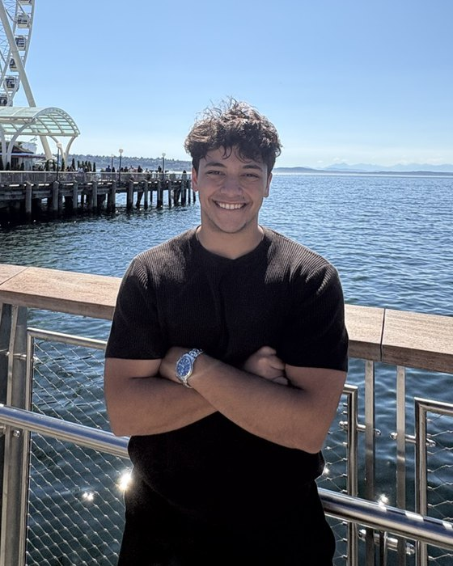
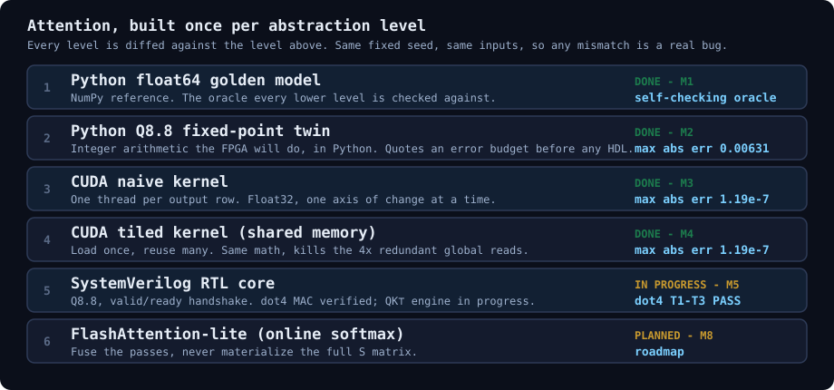
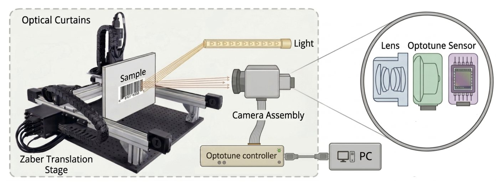
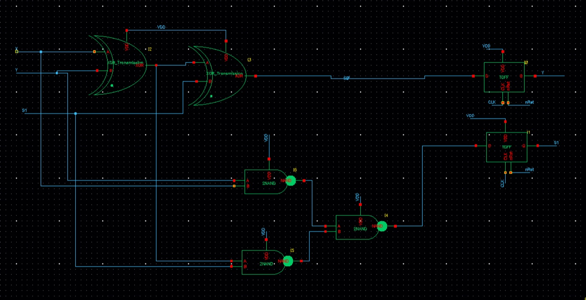
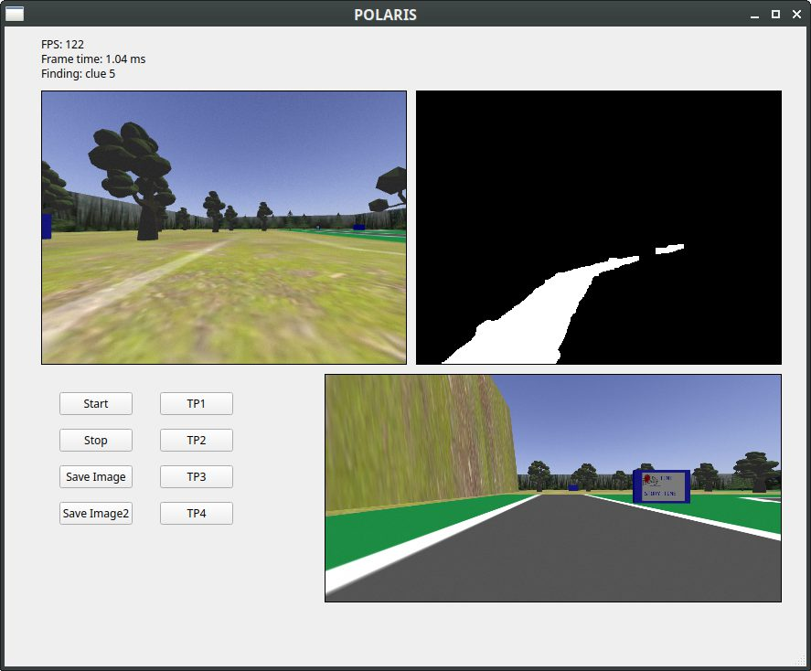
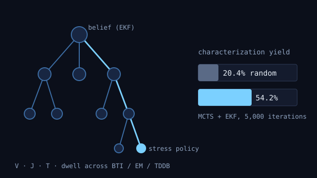
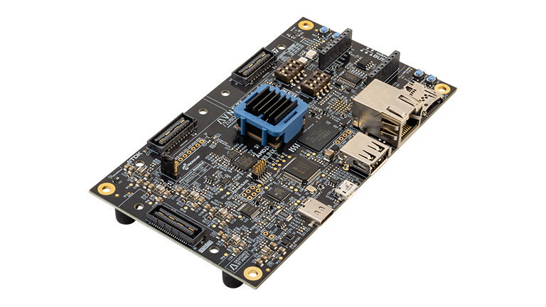

Youssef Elhagrasy
BASc Engineering Physics (ECE) @ University of British Columbia
I am a final-year Engineering Physics student at UBC. I work where machine learning meets the hardware it runs on: making neural-network inference cheaper, designing accelerators from the math down to RTL, and building tools that tell you whether silicon will keep working.
My research spans energy-efficient DNN inference with Prof. Brad Quinton, semiconductor reliability and test with Prof. André Ivanov, and, starting this fall, server energy attribution and Vision Transformer representations. Outside the lab I have interned on silicon teams at Microsoft and Tesla, and did device research at KAUST and simulation work at TRIUMF.

Research interests
- Algorithm–hardware co-design for efficient AI: pruning, sparsity and compact data representations that translate into real energy savings in silicon.
- Accelerators and data movement: memory systems, tensor layouts, and attention kernels from CUDA down to synthesizable RTL.
- Reliability and test: Bayesian and sequential decision methods for qualification, wear-out monitoring, and DFT.
- Systems and vision: energy accounting for cloud workloads, and representation learning in Vision Transformers.
Selected projects

Attention Accelerator: Python → CUDA → RTL
Single-head attention rebuilt at six levels of abstraction and diffed against the level above. The CUDA path reaches 3.86 TFLOP/s on tensor cores; online-softmax RTL cuts latency from 659 to 240 cycles.

Amazon Robotics: Super-Resolution Barcode Scanning
Capstone sponsored by Amazon Robotics. A four-frame beam-shifting imaging rig with calibrated subpixel shifts and SAA/IBP reconstruction that decodes 2 mil finer barcodes on a Bayer sensor, and a clear answer on why it isn't deployable yet.

Optimized Serial Adder
A Moore-machine serial adder designed transistor by transistor in Cadence Virtuoso (45 nm). Logic minimization, a transmission-gate XOR and careful sizing reach 1 GHz at 9.87 µW.

Autonomous Driving & Sign Reading
A ROS/Gazebo robot that drives a four-zone course with 120 FPS vision and PID, and reads clue boards with a lightweight CNN. Full points in about 40 seconds.

RLGera: Bayesian MCTS Reliability Agent
A progressive-widening MCTS agent with EKF belief updates that picks voltage, current-density, temperature and dwell-time stresses in a wear-out simulator. It raised characterization yield from 20.4% to 54.2% across BTI, EM and TDDB, with seeded, fully replayable experiments.

FPGA Neural-Network Acceleration
A pretrained network mapped onto a Zynq UltraScale+ ZUBoard with an AXI CPU–FPGA link and pipelined MAC arrays: 0.5 ms per image, 3× faster than the ARM baseline.
News
- Sep 2026Started two new research projects: server energy attribution with Prof. Mohammad Shahrad, and Vision Transformer representations with Prof. Abdelrahman Eldesokey.
- Sep 2026Attention Accelerator milestone 8: the tensor-core CUDA kernel is 12.7× faster than where it started. Read the blog.
- Aug 2026Wrapped up my second Microsoft internship, on the Cobalt RTL design team (PCIe/CXL bridge).
- 2026First-author paper on adaptive reliability qualification accepted to IEEE Transactions on Reliability.
- 2026Submitted first-author work on combined pruning and activation thresholds to NeurIPS 2026.
- Dec 2024MXene wafer-scale transfer paper published in Advanced Materials.
Publications
- Adaptive Sequential Test Planning for Multi-Mechanism Reliability Qualification via Bayesian Monte Carlo Tree Search
- Combined Per-Kernel Weight Pruning and Activation Thresholds for Energy-Efficient DNN Inference
- Wear-out Sensor SoC Peripheral for Continuous Semiconductor Reliability Monitoring, Lifespan Prediction, and Failure Risk Management
- Wafer-Scale Transfer of MXene Films with Enhanced Device Performance via 2D Liquid Intercalation
Current research
Energy-efficient DNN inference
A two-stage PyTorch framework that learns per-kernel binary masks and activation thresholds to skip multiply-accumulates that do not change the answer. On VGG16-BN / CIFAR-10 it cuts estimated inference energy by 28.5% for a 0.05% accuracy loss, with the energy model checked against SkyWater 130 nm synthesis.
Reliability qualification and test
Treating qualification across BTI, electromigration and TDDB as a sequential decision problem. A Bayesian MCTS planner raised qualification yield from 20.4% to 54.2%, and BayeShield extends it to risk-constrained diagnosis over roughly 250k belief states. Earlier work produced an IEEE 1500 DFT wrapper for the lab's wear-out sensor IP.
Server energy attribution
Connecting application activity in cloud and serverless workloads to OS scheduling, resource allocation and hardware energy counters, and studying how fractional-CPU limits and concurrency distort energy accounting in multi-tenant systems.
Vision Transformer representations
How patch-token features in self-supervised ViTs encode semantic and spatial structure, and how well they transfer under distribution shift for correspondence and fine-grained tasks.